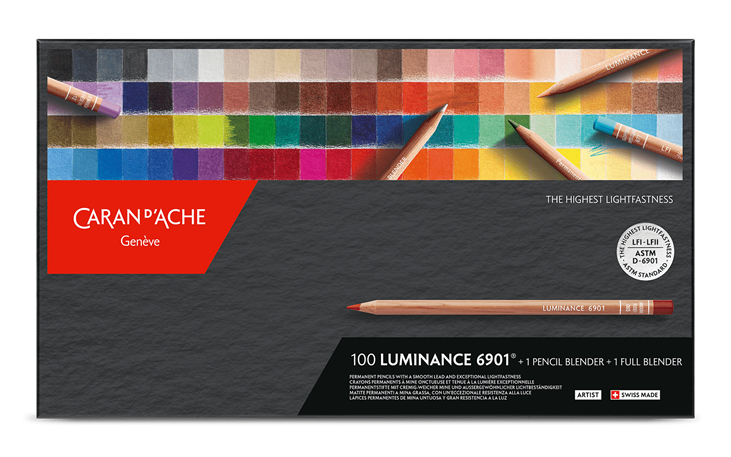

Coding/Web Development
I want to do mostly Web Development as my professional career. I'm really liking this complex discipline.
The areas im focusing mainly is the Front-End side:
- Html & Css
- Javascript
- Frameworks: Bootstrap, React, Vue, Angular.
- Web Design Theory
And other things for the time being.
Physical Training
Being in shape and health is crucial for any human being.
I believe every citizen should have a 2 hour free moment daily so they could put in some training.

If you are interested to see a gym website, click here.
Combat/Self Defense
We live in a shady world, so to learn how to defend ourselves can be very handy if the occasion occurs.
Also the competition side can be a way for men to push themselves and achieve new heights in their lives. Something i enjoy a lot.
There is 2 Martial Arts i have in mind:
Boxing
Judo
But there is some others im also interested such as:
Brazilian Jiu-Jitsu
Muay Thai

Drawing and Painting
I like to spend time practicing art and when i color them with good color pencils, it's an amazing feeling.
To create something from your imagination and make it alive artistically, there is nothing like it.
If you are interested in some pro materials for color pencils, click on the images below:
